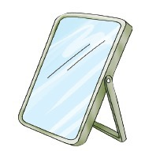
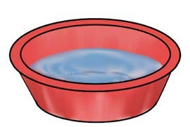
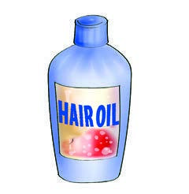
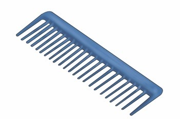
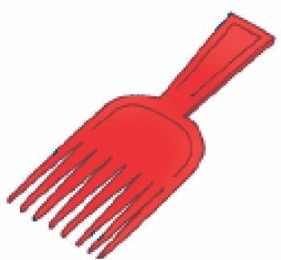

Page 11
I wash my hair.

I use these items to wash my hair.









Questions
1. Name the materials used for cleaning and caring for hair that you identified in pictures 1–7 or from the descriptions.
2. Name other items used for washing hair that you know.